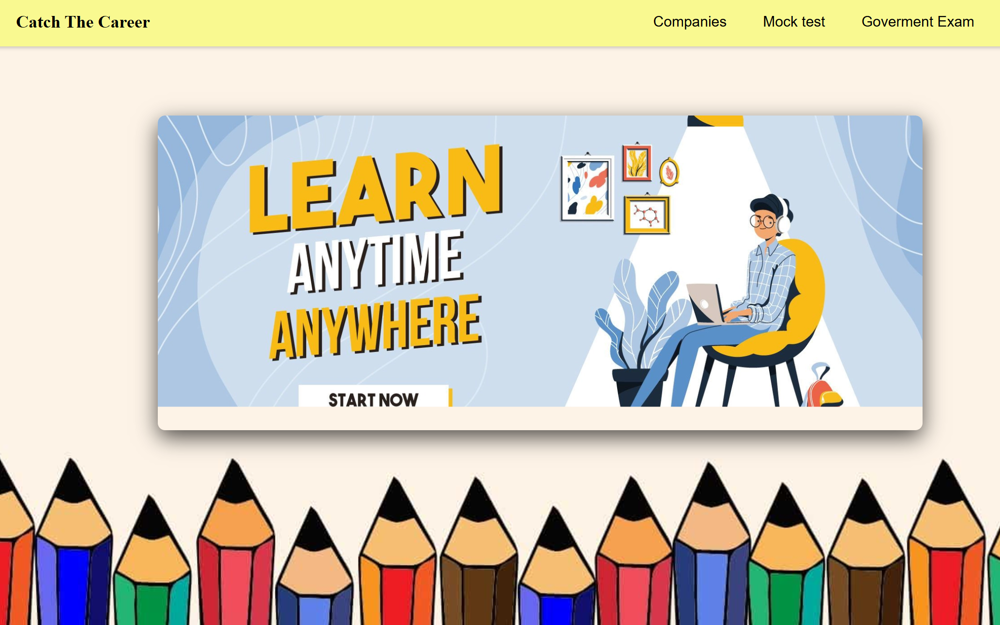

Things I have built
Purpose: Furniture Mart is an e-commerce website created to
display furniture products in a clean and modern layout
and allow users to explore items easily.
What I Learned:
Purpose: Catch The Career is a career guidance website that helps students find suitable career paths and learning resources.
What I Learned: